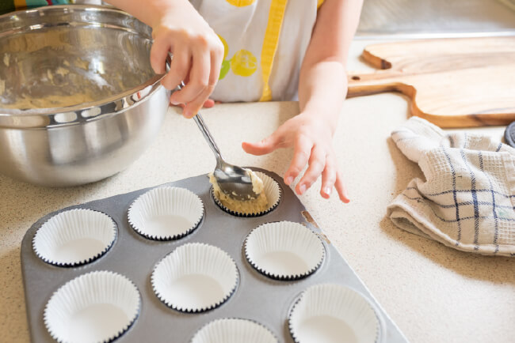

Receta de Cupcakes
¡Prepara los mejores cupcakes con nuestra receta exclusiva de Cupcakes Coquette!
Aquí tienes nuestra receta secreta para hacer los cupcakes más deliciosos que jamás hayas probado. Nos enorgullecemos de la calidad de nuestros productos, y esta receta es la clave de nuestro éxito. Utilizamos solo los ingredientes más frescos y de la más alta calidad para garantizar que cada bocado de nuestros cupcakes sea una experiencia inolvidable.
Ingredientes:
- Harina de trigo
- Azúcar
- Huevos
- Leche
- Mantequilla
- Polvo de hornear
- Extracto de vainilla
- Sabores adicionales (opcional)
- Decoraciones (opcional)
Instrucciones:
Aquí hay una descripción detallada de cómo preparar nuestros cupcakes:
- Prepara los ingredientes y asegúrate de tener todo a temperatura ambiente.
- Bate la mantequilla y el azúcar hasta que estén cremosos.
- Agrega los huevos uno a la vez, batiendo bien después de cada adición.
- Incorpora la harina tamizada y el polvo de hornear a la mezcla, alternando con la leche.
- Agrega el extracto de vainilla y cualquier sabor adicional que desees.
- Vierte la mezcla en moldes para cupcakes y hornéalos a la temperatura adecuada.
- Deja enfriar y decora según tu gusto.
- ¡Disfruta de tus deliciosos cupcakes!

¡Esperamos que disfrutes preparando y compartiendo esta receta tanto como nosotros! En Cupcakes Coquette nos esforzamos por ofrecer lo mejor a nuestros clientes, y nuestra receta exclusiva es una muestra de nuestro compromiso con la calidad y el sabor excepcionales.